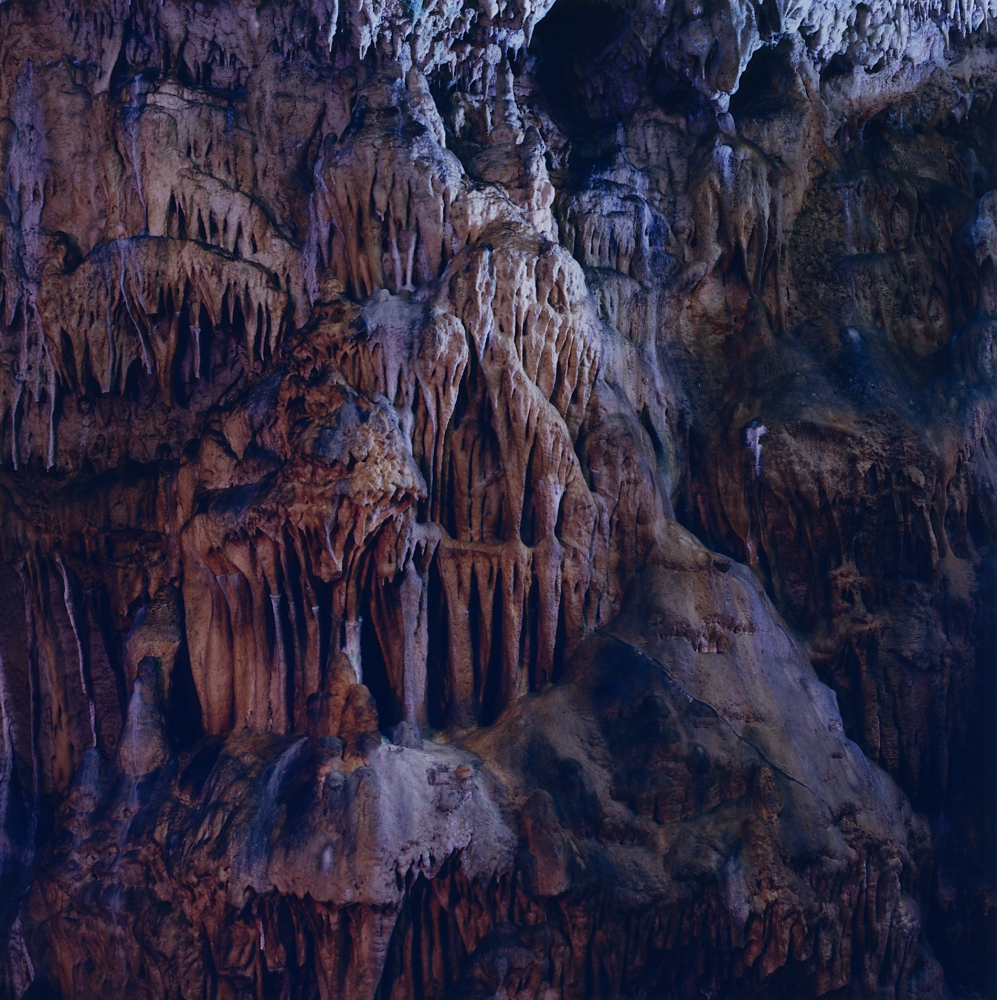
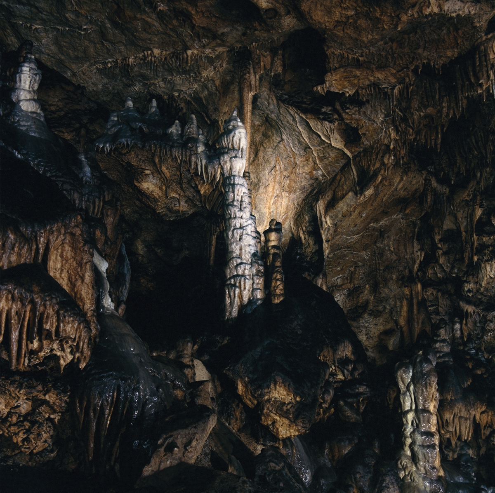
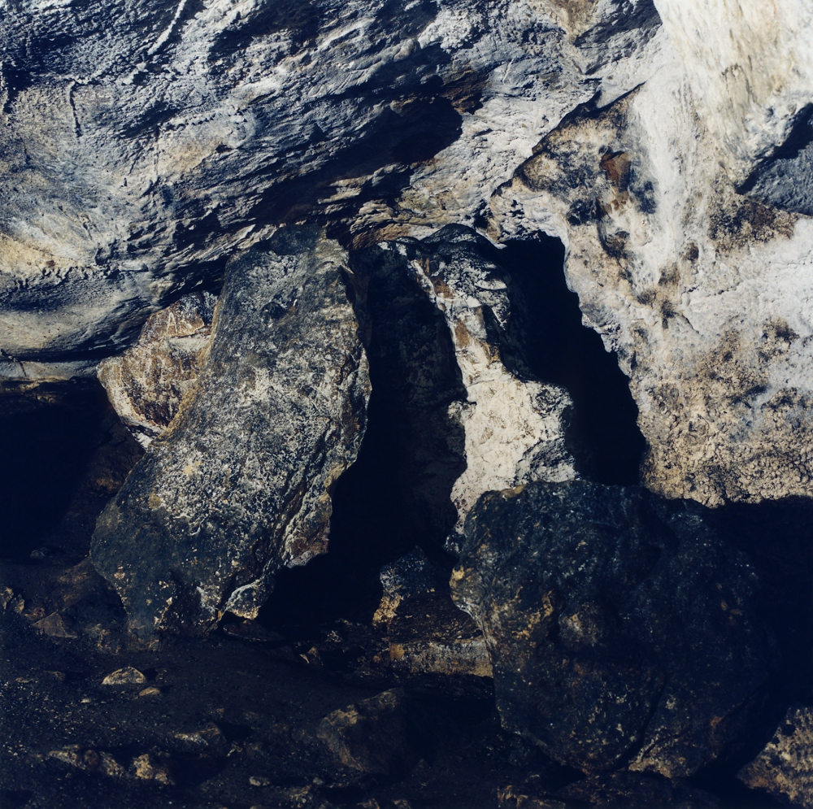
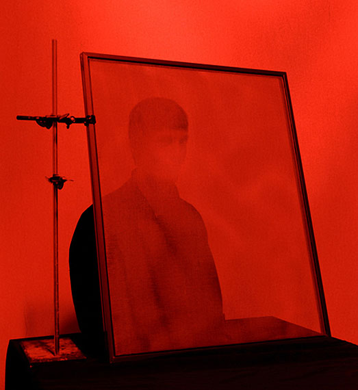
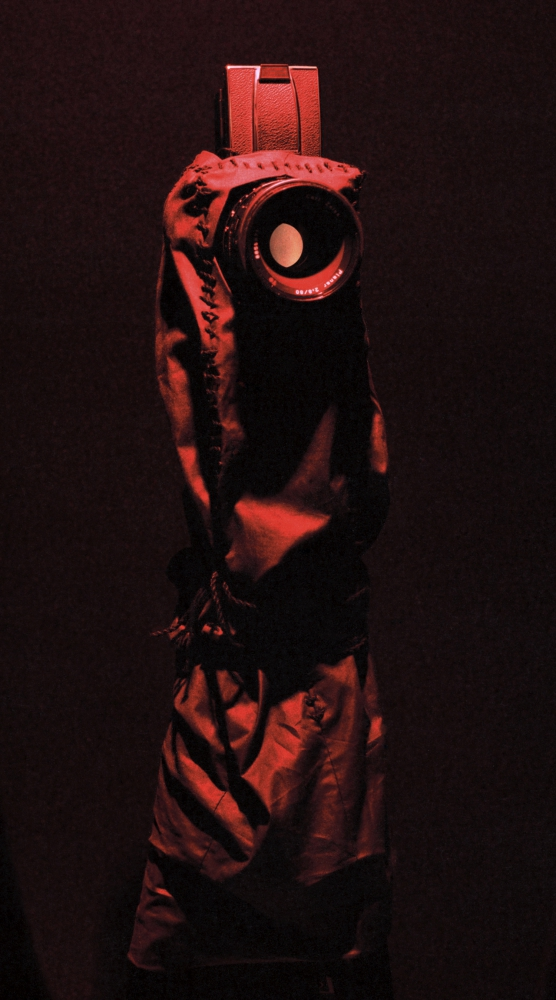
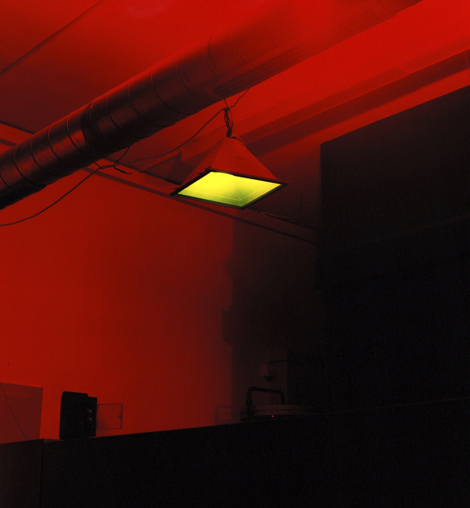
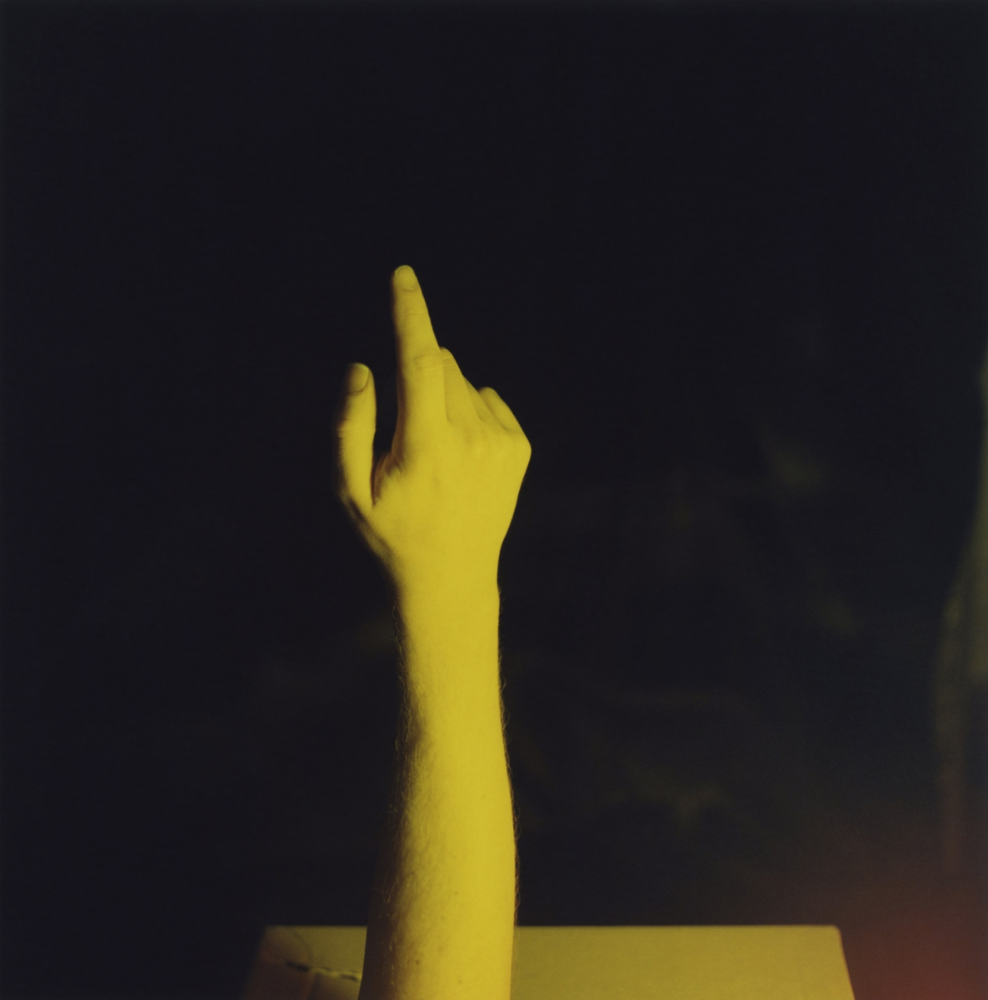
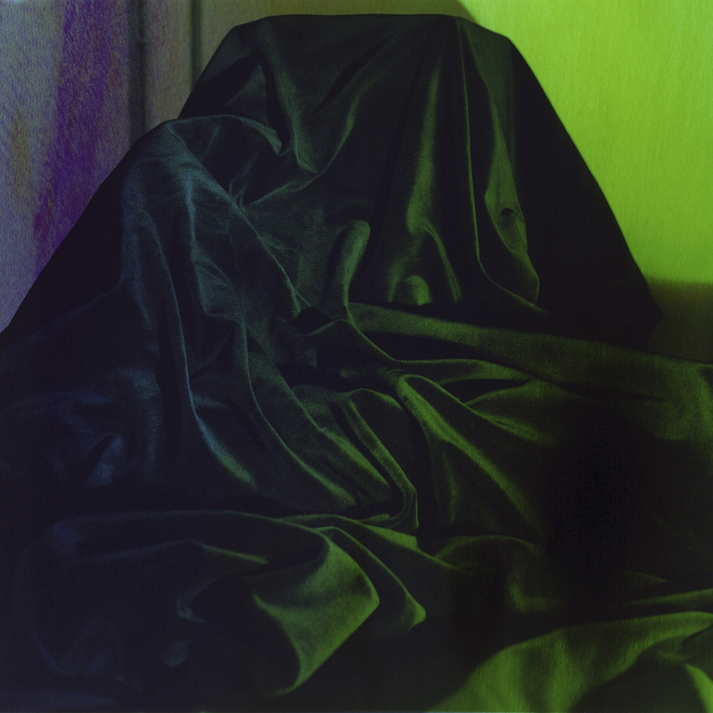
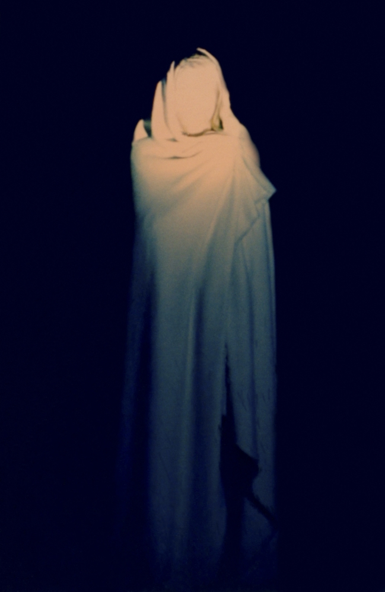

Alexander Gehring
Lives in Berlin. He studied at the FH Bielefeld University, as well as at the London College of Communication, and graduated in 2011. Gehring’s work has been shown in international museums and galleries, most recently in Experimental at the Galeria Tagomago, Paris. He is represented by pavlov‘s dog gallery in Berlin.








